Workflow plugin
Workflow plugin
|
|
Workflow - Manual - Shop - Licence: Once-off - Workflow Bank Import Plugin - Shop - Licence: Once-off - Workflow Editor Plugin - Shop - Licence: Once-off - |

Unlock the power of streamlined task management with our Workflow plugin. Seamlessly record every step and process, whether it's inventory management, debtor/creditor tracking, or document handling, within osFinancials/TurboCASH. Visualize your workflow at a glance, gaining instant insights into each stage of progress.
Assign tasks or steps to specific users, track outstanding steps, and effortlessly manage transitions between stages. Our Workflow Plugin isn't just a tool - it's a knowledge system, empowering you to formalise and share business processes efficiently. Gain better control over your operations, with historical data readily available for informed decision-making. Say hello to optimized processes and enhanced productivity with the Workflow Plugin.
Workflow Bank Import Plugin
Workflow Bank Import Plugin - Shop - Licence : Once-off
The Workflow Bank Import plugin provides users with a guided step-by-step process for importing downloaded bank transactions and posting them to the appropriate journal or batch. This streamlined workflow ensures efficiency and accuracy in handling bank transactions within osFinancials.
Workflow Editor Plugin
Workflow Editor Plugin - Shop - Licence : Once-off
Use workflow to create you own processes. With the Workflow Editor plugin, you can customize and create your own processes tailored to your specific needs. Whether it's automating tasks, managing approvals, or streamlining workflows, this tool empowers you to design efficient processes that align with your business requirements.
Older Workflow documentation
The workflow plugin allows you to record the steps or processes of a task.
You can also gain knowledge of a process through easier to go through the various tutorials and record the steps.
The different screens osFinancials / TurboCASH can be created such as the stock screen or debtors / creditors and documents. But also websites, or for example, Excel documents appear in the active window with a description. This allows you to record almost every conceivable process, visualize and gain instant insight wherever you are in the process and what steps have been taken before.
A step can be assigned to a user and an administrator can see all workflow steps not done (outstanding steps) and possibly assign a task to a user. Outstanding transitions that are possible after showing the step. A transition is one step to another step. If there is only one valid transition, you will not have any choices.
A transition may include a condition that must be met.
Workflow is a knowledge system that can gain your knowledge or just to share it with others. This allows you to formalize your business and capture the steps in an automated system.
Another advantage is that you retain a better overview of your running processes and you have historical data at hand.
Setup / Activate Workflow
In the standard Set of Books, there are already workflows but if you have an older database, you may import a workflow file from another database using the Workflow editor.
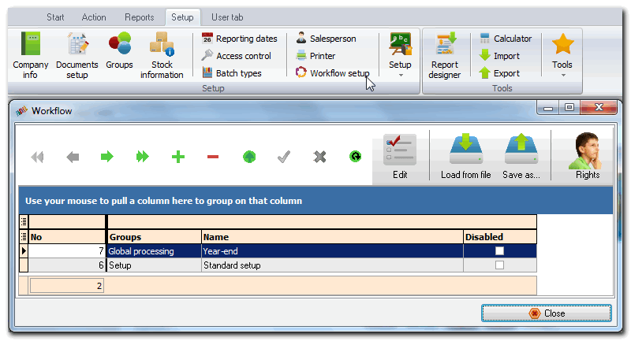
Editor
Workflow list
In the Workflow list, you can create workflow, edit save or load or assign rights.
Rights
Select users (added in Setup → Access control) who are allowed to start this workflow.
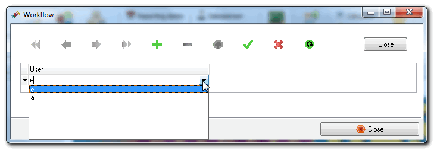
Save / load file
With these capabilities, you can easily copy workflow file (*.wfd file type) from one Set of Books to another.
Please note that some selected parameters are not the same in the records which reads your workflow.
Use Workflow designer
With the designer, you can add steps and see the connections (transitions) visually.
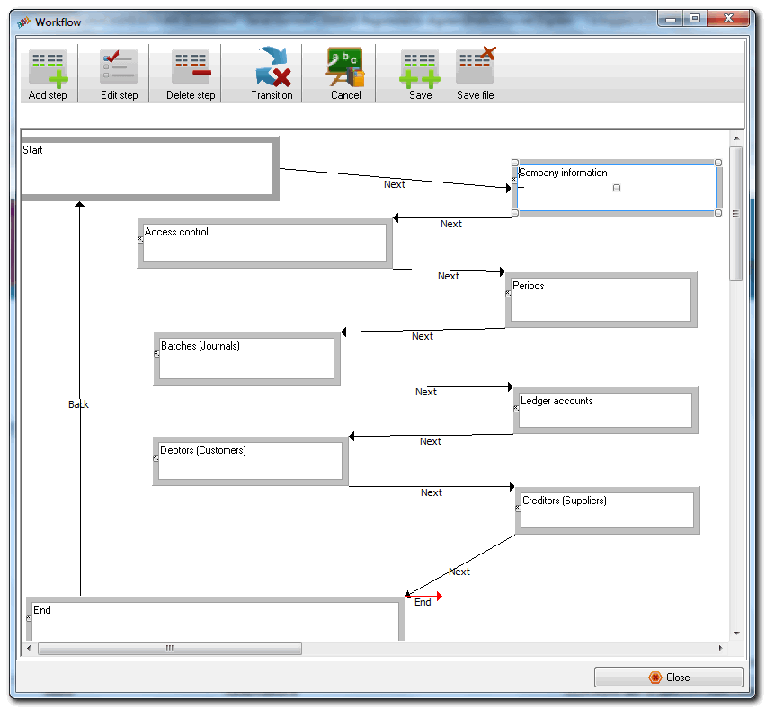
Workflow Add / Edit Steps
Each step is identified by a step name which can be assigned to a screen type. The screen types may be assigned to specific users.
If you edit a step, you will see the following tabs.
- Stepname: The name of the step.
- Screen type: Various screens from which you can choose to see a step by step explanation types.
- User: All users is the default. If you have added users (in Setup → Access control), you may assign this step to a specific to process this step. If a step is set (assigned) to a specific user, then this step will put someone else performing the transition to the user.
Screen type
If you select a screen type, is some documentation on the parameters in the Document groups (Extra) tab. The screen types are as follows: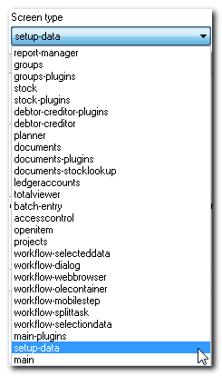
- report-manager: show reportman reports.
- groups: Groups maintenance screen.
- groups-plugins: Plugins a group.
- stock: Stock screen.
- stock-plugins: Plugins for stock.
- debtor-creditor-plugins: Plugins for debtors creditors.
- debtor-creditor: Debtors or creditors screen.
- planner: Agenda.
- totalviewer: Totals list.
- batch-entry: Journal (batch) entry.
- documents: Documents.
- documents-plugins: Plugins for documents.
- openitem: Open item screen.
- projects: Projects screen.
- workflow-selecteddata: Show selected dates (confirm a selection).
- Workflow-dialog: Dialog (question text with possibly different answers).
- Workflow-webbrowser: Internet Explorer (IE) Web Browser imbedded with which you can go for example to a specific page.
- workflow-olecontainer: Ole container to open different mime types and edit as an Excel document, or displaying a PDF with Acrobad reader.
- workflow-mobilestep: not implemented yet reserved for taking steps via a mobile device.
- workflow-splittask: not implemented yet reserved for splitting a task to two tasks.
- workflow-selectiondata: Make a selection screen with free sql or use one of the standard options.
- main-plugins: Plugins for the main program.
- setup-data: Screens for settings.
- main: Main functions - currently only closes year / open new year.
Step data tab
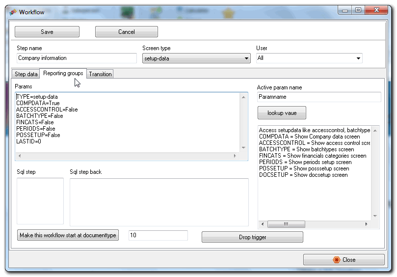
- Status: reserved
- Duration: The duration of the interval which should be completed within the task.
- Interval: The interval is the maximum duration for a task (step).
- Comments: The text to explain the task (step). This will float as a comment when the mouse is moved over or focus on a step in the Workflow designer. When the Workflow steps are performed, the comments entered here will be displayed when a step (screen) is launched.
- Memo underneath: The SQL to display the line in the workflow list.
Step Reporting groups (Extra) tab
The fields are as follows:
- Params: Parameters for the screen.
- Active param name: the name of the selected parameter.
- lookup value: for some parameters a selection screen is available to select the correct value for this screen.
- Sql step: sql start at step.
- Sql step back: reserved.
- Make this workflow start at documenttype: Fill in the edit box the document type id that you want to use as it is created to start this workflow automatically. If you enter document type 14, for quotes this will create a quote for this workflow. Thus, you can keep progress of the delivery (quote accepted) status process in the different stages and track that different people together can complete a job.
- The document types is as follows:
10 – Invoice
11 – Credit note
12 – Purchase
13 – Supplier return
14 – Quote
15 - Order
Workflow Transition tab
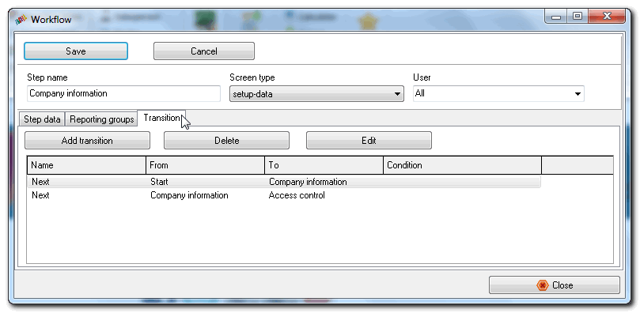
Transitions are the flow to the next step. You may add, delete or edit transitions.
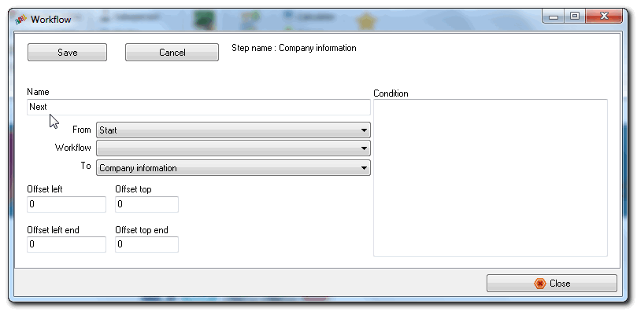
In a transition, you can still make various settings.
- Name: Name of the button in the selection of transitions.
- From: Select the step.
- Workflow: this field is set to empty = current.
- To step: Select the next step where is the transition to.
- Offset left: The left position of the transition to the step.
- Offset top: The upper position of the transition to the step.
- Offset left end: The left position of the transition to the step.
- Offset top end: The upper position of the transition to the step.
- Condition: sql condition, for example; “Select * from dochead where wdocid = <@KEY@>” it produces a record then the transition can proceed.
Workflow useage
Workflow list
In this list you will see the active tasks that still need to be handled, or you can start a new task.
View historical data of a job and looking for completed tasks.
If you are an administrator, you can also edit same workflow.
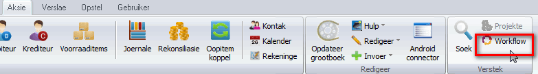
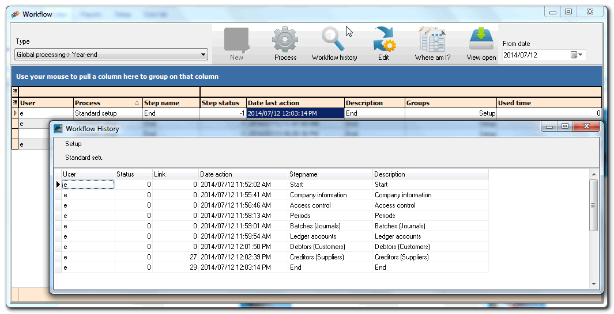
With your right mouse button, you can also assign tasks to other users.
- Type: The type of workflow that you start when you press on the New icon.
- New: Create a new workflow.
- Process: Show execution screen. This will launch the screens in TurboCASH / osFinancials as assigned to each step.
- History: Shows the history of the task. You may right-click on a selected step to launch the “Where am I?” feature.
- Edit: If you are an administrator, you can quickly edit the workflow.
- Show closed: Shows finished or partially completed workflow steps for a task from date from date field. If you click on the View closed icon, the Open tasks will be listed.
- Where am I?: A screen that shows you where you are currently in the process.
Process workflow
In the output screen shows the current screen or the choice of transitions. The upper part is always displayed and the set screen appears in the lower right by this step. If several transition opportunities as they are executed through selection buttons. You can then choose from the various transitions.
If you click on Continue button the next screen will be lauched.
For example, the Setup workflow is as follows:
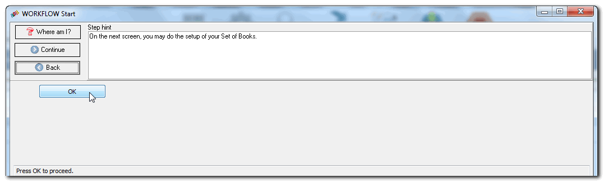
Click OK and the Setup company information screen is displayed.
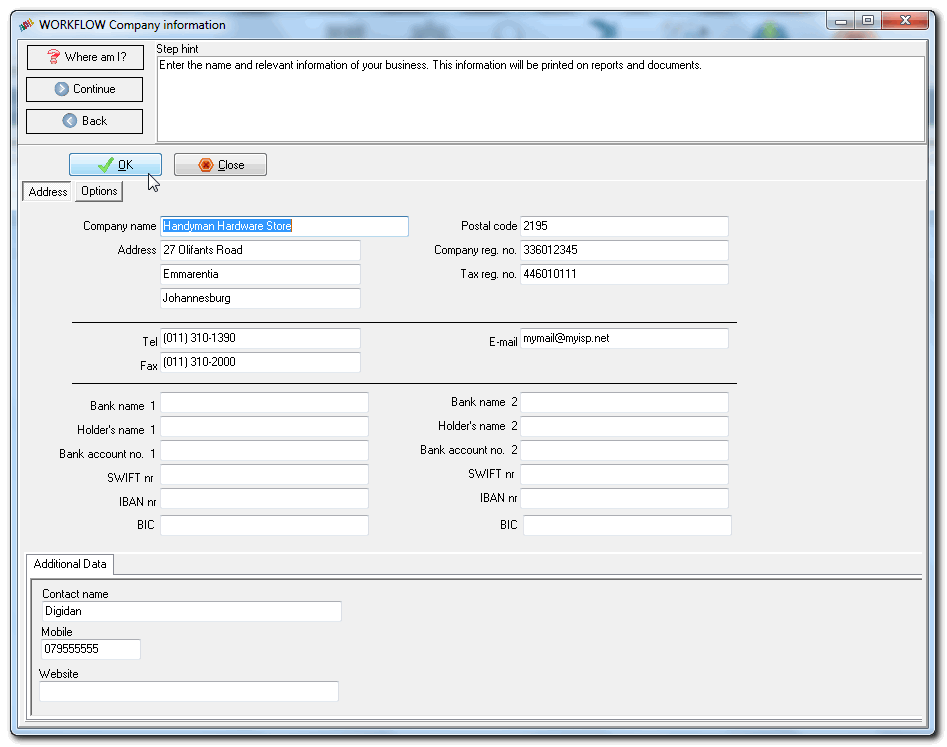
Enter / edit the necessary details, and click OK to save the changes. Click Continue to proceed to the next step.

Add users and assign rights, if necessary, and click Apply to save the changes. Click Continue to proceed to the next step.
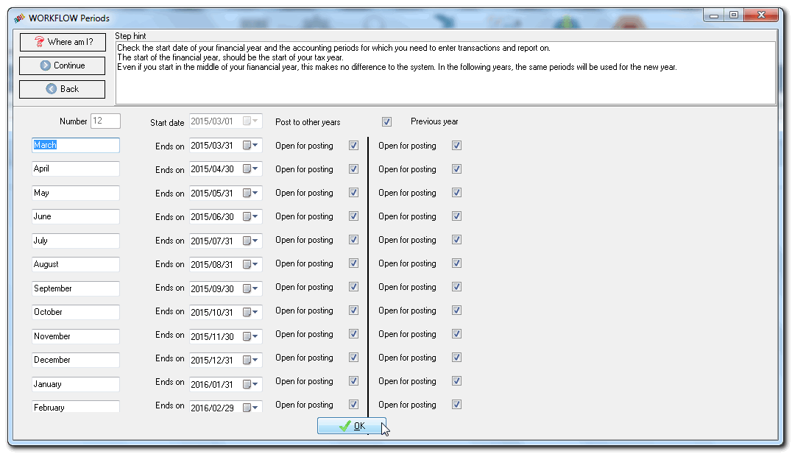
Check and set the periods (Start of financial year) and click OK to save the changes. Click Continue to proceed to the next step.
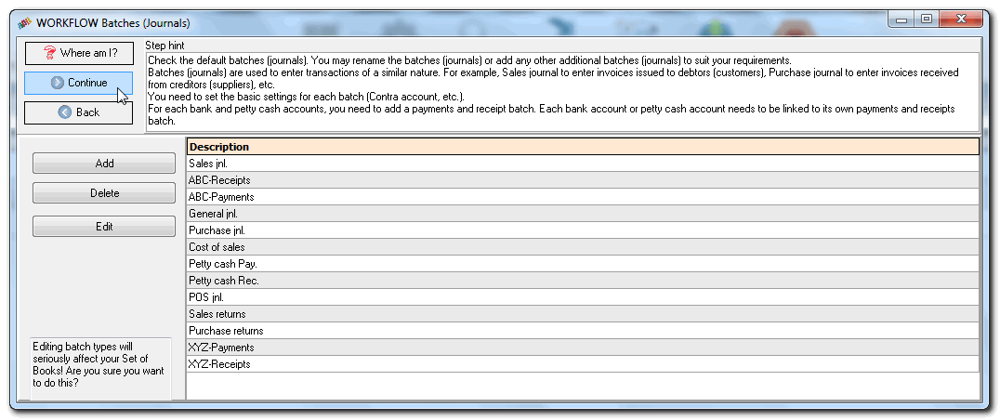
Add, delete or change the batch (journal) names as necessary. Click Continue to proceed to the next step.
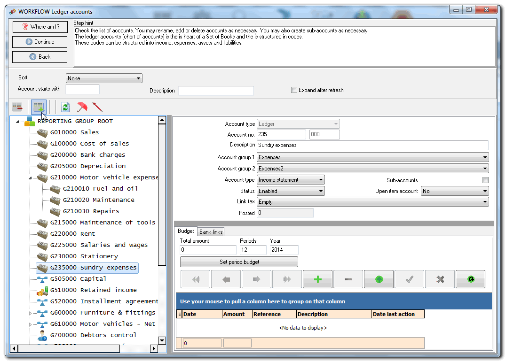
Add / edit / delete accounts as necessary. Remember to save the changes. Click Continue to proceed to the next step.

Add / edit / accounts for debtors (customers) as necessary. Click Continue to proceed to the next step.
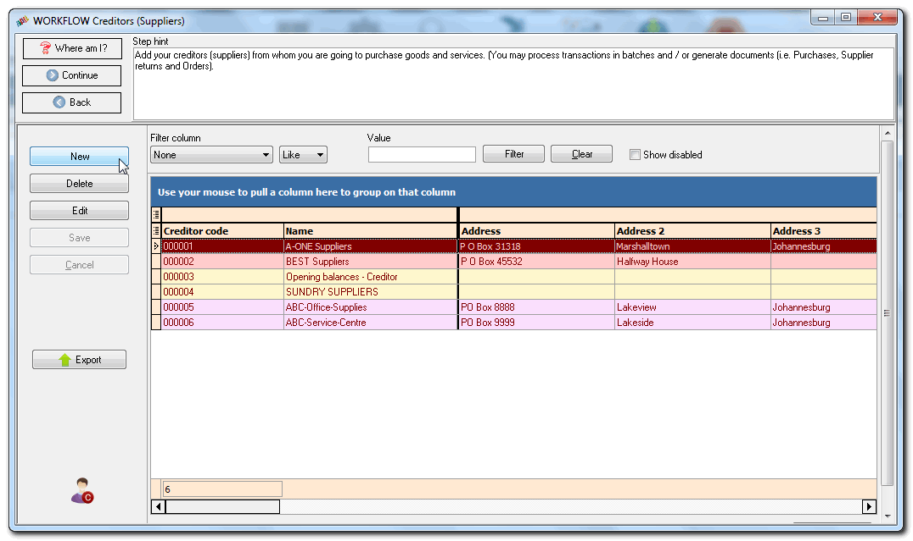
Add / edit / accounts for creditors (suppliers) as necessary. Click Continue to proceed to the next step.
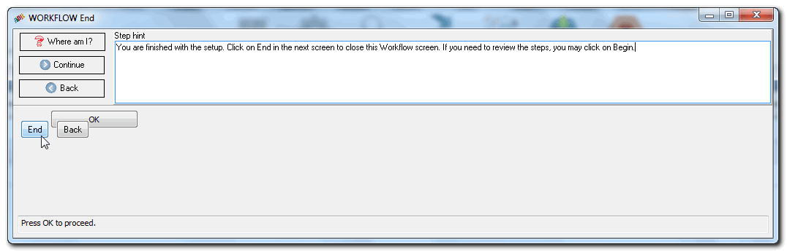
Where am I
In which I can see where you are in the process screen and what steps have been dealt with when and by whom.
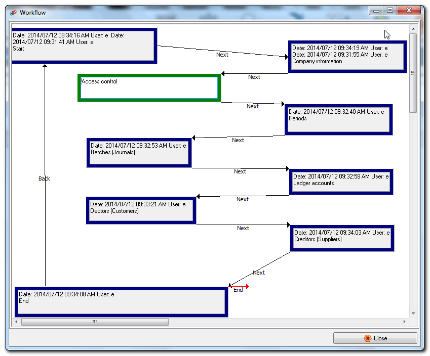